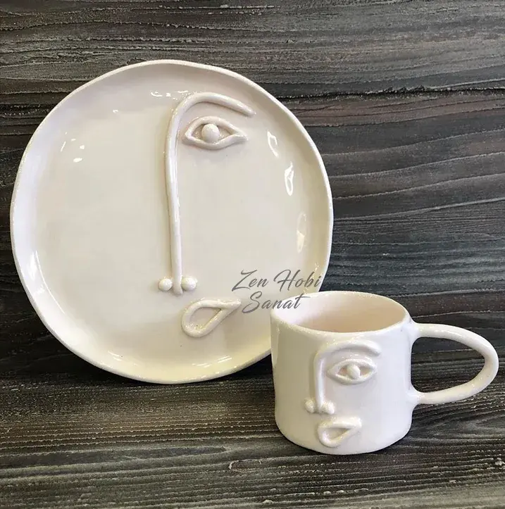
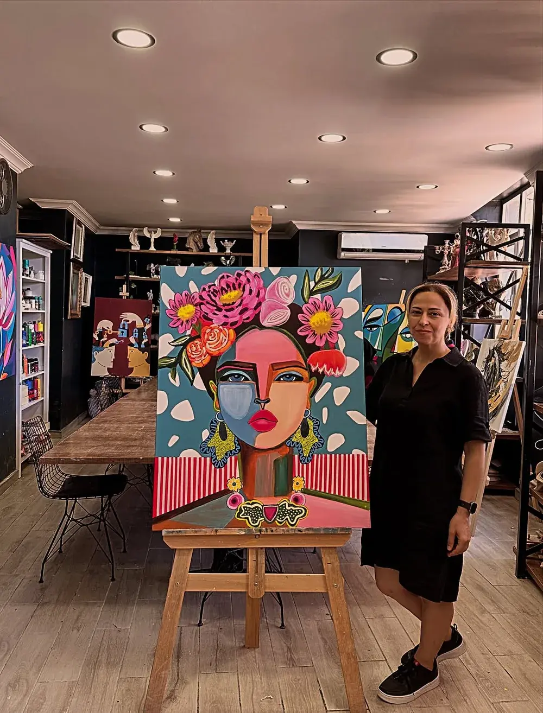
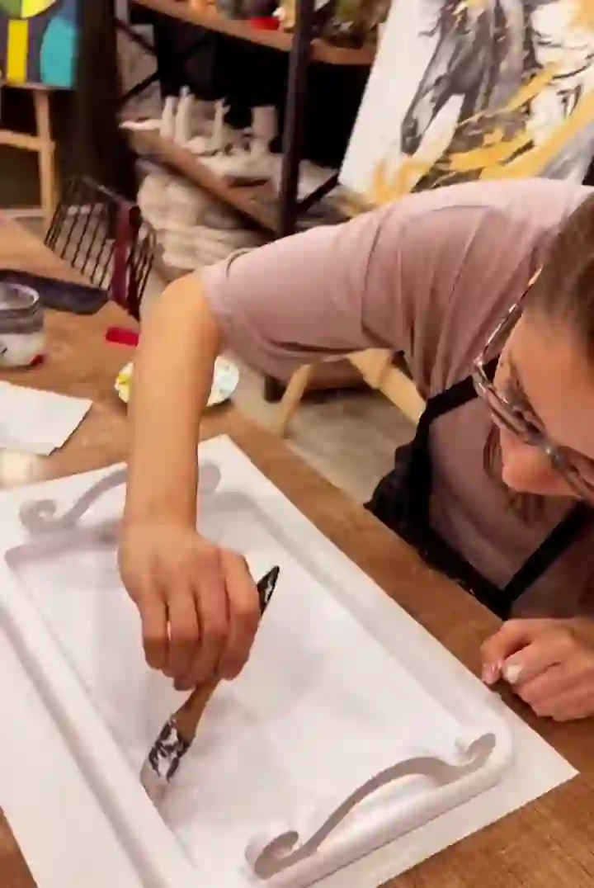
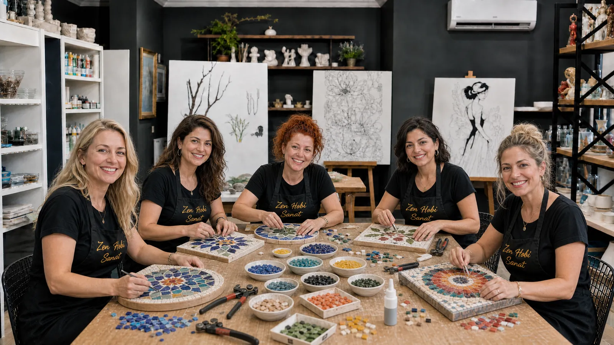
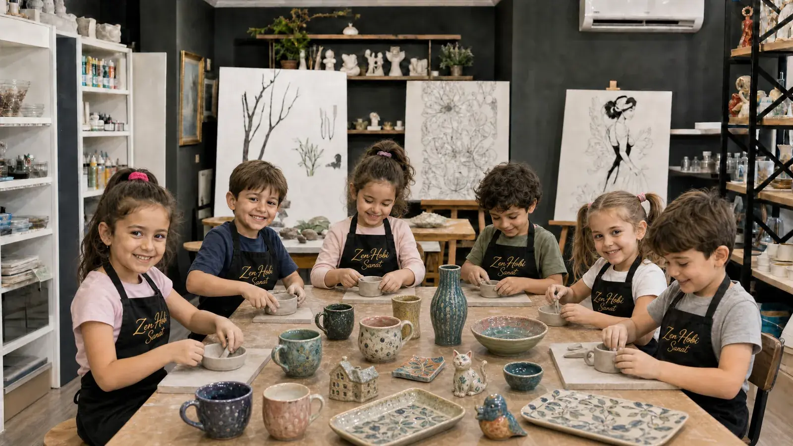

En Sevilen
Unutulmaz Kutlamalar
Sanatla Doğum Günü Partisi
Bahçeşehir'de doğum gününü, arkadaşlarınla birlikte bir şeyler üreterek kutla. Klasik bir parti değil; herkesin elinden çıkan, yıllarca saklanan gerçek bir hatıra.
Sanatta Daha Renkli Kutlamalar
Doğum günü, birlikte üretilen bir hatıraya dönüşsün
Zen Hobi Sanat'ta doğum günü partisi, klasik oyun ve ikramların ötesine geçer. Doğum günü sahibi ve tüm arkadaşları aynı masada bir araya gelir; eğitmenimiz eşliğinde seramikten ürün yapıp boyar, resim yapar ya da tercih ettiğiniz atölyede birlikte üretir. Pasta kesilir, kutlama yapılır — ama asıl fark, herkesin o günden elle tuttuğu, gözle gördüğü bir eserle ayrılmasıdır.
- Eğlenceli atölye deneyimi — eğitmen eşliğinde, herkes için kolay
- Unutulmaz anılar — klasik bir parti değil, gerçekten yaşanan bir gün
- Yaratıcı aktiviteler — seramikten ürün yapma ve boyama, resim ve daha fazlası
- Herkes kendi eserini eve götürür
- Pasta ve ikramlarınız için hazır kutlama alanı
- Çocuk ve yetişkin grupları için uygun
Çocuklarda Etki
Çocuklar için neden farklı bir doğum günü?
Çoğu çocuk doğum günü partisi; balonlar, müzik ve ekranlar arasında hızla tüketilip unutulan birkaç saatten ibarettir. Sanatla kutlamada ise çocuklar, doğum günü boyunca aktif olarak üretir: kili şekillendirir, fırçayı eline alır, kendi kararlarını verir. Bu yalnızca eğlenceli değil, gelişimsel olarak da değerli bir deneyimdir — ince motor beceriler, dikkat ve odaklanma, sabır ve kendini ifade etme becerisi bu süreçte doğal olarak çalışır. Arkadaşlarıyla aynı masada, aynı hedefe (kendi eserini tamamlamaya) odaklanmak, paylaşmayı ve birlikte üretmeyi öğretirken kalabalık ve gürültülü partilerin yorucu havasından da uzaklaştırır. Ve en önemlisi: parti bitince elde balon kalmaz, ama boyanmış bir kupa, bir tablo ya da bir seramik parça yıllarca o günü hatırlatır.
- İnce motor beceri ve dikkat gelişimini destekler
- Kendini ifade etme ve karar verme özgürlüğü verir
- Arkadaşlarla paylaşma ve birlikte üretme deneyimi
- Kalabalık, dağınık parti ortamından uzak, sakin bir odak
- Ebeveynler için organizasyon derdi olmayan, hazır bir kutlama
- Yıllarca saklanan, elle tutulur bir doğum günü hatırası
Yetişkinlerde Etki
Yetişkinler için sanatla kutlama
Yetişkin doğum günleri de artık klasik kalıpların dışına çıkıyor. Bir kafede ya da barda geçirilen birkaç saat yerine, yakın arkadaşlarla telefonları bir kenara bırakıp birlikte bir şeyler ürettiğiniz bir kutlama — hem daha samimi hem de gerçekten akılda kalıcı. Seramikten bir ürün yapıp boyamak, resim yapmak ya da mozaik döşemek; günün stresinden uzaklaşıp ellerinizle bir şeye odaklanmanın verdiği o huzuru arkadaşlarınızla paylaşmak demek. Herkes kendi ürettiği parçayla ayrılır — sıradan bir doğum günü hediyesinin ötesinde, o günü hatırlatan gerçek bir obje.
- Arkadaşlarla telefonsuz, kaliteli zaman
- Günlük stresten uzaklaşan, huzur veren bir odak
- Sıradan mekanlara alternatif, akılda kalıcı bir kutlama
- Herkes kendi ürettiği eserle ayrılır
Nasıl çalışıyoruz?
Üç adımda doğum günü partisi
01
Planlama
Kaç kişi olacağınızı ve doğum günü sahibinin yaşını paylaşın; size en uygun atölyeyi ve süreyi birlikte belirleyelim.
02
Hazırlık
Happy Birthday süslemeleri, malzemeler ve eğitmen bizden; siz sadece pastanızı ve ikramlarınızı getirin.
03
Kutlama & Üretim
Arkadaşlar bir masada birlikte üretir, pasta kesilir, herkes kendi eseriyle — ve güzel anılarla — evine döner.
Seçenekler
Hangi atölyede kutlayalım?
Doğum günü sahibinin ilgisine göre atölye türünü siz seçin, gerisini biz hazırlayalım.




Sık Sorulan Sorular
Merak ettikleriniz
Küçük arkadaş gruplarından daha kalabalık kutlamalara kadar organize edebiliyoruz; kişi sayınızı paylaşın, size en uygun düzeni birlikte planlayalım.
Çocuk doğum günü kutlamaları 4 yaş ve üzeri için uygundur; yetişkin kutlamalarında bir yaş sınırı yoktur.
Evet, pastanızı ve ikramlarınızı siz getiriyorsunuz; kutlama alanını ve süslemeleri biz hazırlıyoruz.
Seramikten ürün yapma ve boyama, resim, dekoratif boyama ve mozaik gibi seçeneklerden doğum günü sahibinin ilgisine göre seçim yapabilirsiniz.
Ortalama 1,5-2 saat arası; grup büyüklüğüne ve seçilen atölyeye göre değişebilir.
@zenhobisanat
Atölyeden günlük kareler
Yeni eserler, açılan kontenjanlar ve workshop duyuruları önce Instagram'da. Atölyenin gündelik hâline en yakın yer — gelin, oradan da tanışalım.
Instagram'da Takip Et
Doğum Günü Teklifi
Bir sonraki doğum günü partisi bizde olsun
Kişi sayısı ve tarihinizi paylaşın; size özel doğum günü teklifimizi hazırlayalım.